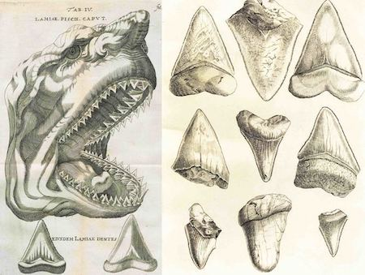

During the Renaissance, megalaodon teeth were believed to be petrified tongues (glossopetrae) of dragons and snakes. However, in 1667 naturalist Nicolas Steno correctly identified them as shark teeth. His sketches (from his book The Head of a Shark Dissected) of the assumed shark head and teeth are seen to the right. Swiss naturalist Louis Agassiz (pictured to the right) gave it its initial scientific name, Carcharodon megalodon in 1843. Louis Agassiz jsutified placing this shark in the carcharodon family (the only living memeber of which is the great white shark) because of the similar tooth composition it shares with the great white shark. Over time, it's name was updated on several occasions. Its now placed in the carcharocles family, which is composed of other extinct megatooth sharks. Agassiz's justification for placing it in the carcharodon family has been rendered false, especially since it is now believed that its similar (great white) teeth is due to convergent evolution. While it's full scientific name is still up for debate, it's Ancient Greek translation is unanmiously agreed upon. The name megalodon is Ancient Greek for "big tooth". Mega (literal translation: megas) translates to big or mighty, while odon (literal translation: odontús) translates to tooth. Many nicknames were given to the creature including: "giant tooth shark", "megatooth shark", "big tooth shark", or "Meg" (for short).